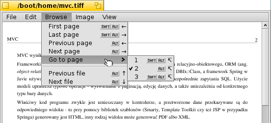
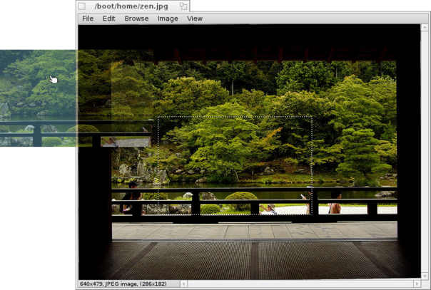

English
English Français
Français Deutsch
Deutsch Italiano
Italiano Русский
Русский Español
Español Svensk
Svensk 日本語
日本語 Українська
Українська 中文 ［中文］
中文 ［中文］ Português
Português ShowImage
ShowImage
| Deskbar: | No entry, normally launched via double-clicking a supported file. | |
| Location: | /boot/system/apps/ShowImage | |
| Settings: | ~/config/settings/ShowImage_settings |
ShowImage is an application used for viewing images in various formats. Its funcionality is not limited only to viewing photos, it can also crop images, show slideshows, rotate and flip images.
If you want to launch this application, simply double-click on some image on your computer.
Browse photos
You are not limited to viewing only the image you used to launch application. You can go both to previous or to next image from the folder using arrows on keybord. You can also zoom using either mouse scroll or shortcuts - ALT + for zooming in and ALT - for zooming out. High-quality zooming is set by default, but you can disable this function unchecking . This function does very fast bilinear filtering.
There is a possibility to simply zoom picture to the original size or to fit to the window size. Use menu or shortcuts - ALT 1 to get back to the original size or ALT 0 to fit to the window size. From the same menu you can also enable stretching an image to the window.
ShowImage does support multiple-page files, such as TIFF. It means you can turn pages while browsing any multiple-page image. Make use of menu or use shortcuts (see screenshot above) for this function.
To change mode to full-screen, simply choose ALT ENTER shortcut.
Slide show
You can run slideshow using menu, simply choose . There is an option for changing slide delay from 3 to 20 seconds. Default value is a 3 second delay, but you can change it from menu.
Flip and rotate images
This function is also built-in. If you would like to rotate some image, choose proper position from menu or use shortcuts - ALT R will rorate your image clockwise and SHIFT ALT R counterclockwise.
You can also flip images. will flip your image horizontally and vertically.
Set background
You can set your desktop background directly from ShowImage. Just choose and Backgrounds preflet will pop-up.
Drag and drop
There is an option to select a piece of an image and create new image file from the selection. Simply press CTRL or ALT and select a fragment you would like to use as a new file and drag the selection to desktop. Also, you can change mode to selection mode, so you will be able to select parts of images using just a left mouse button. This option is available from
